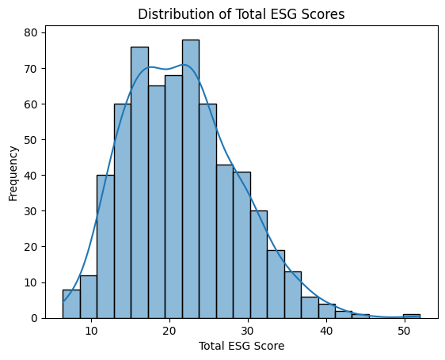
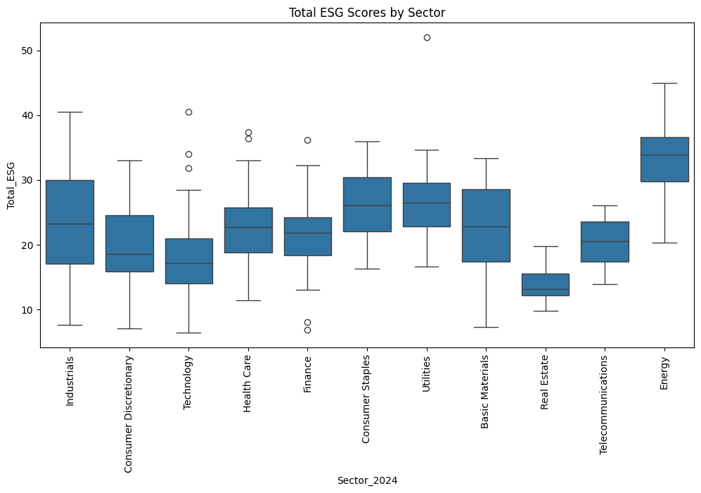
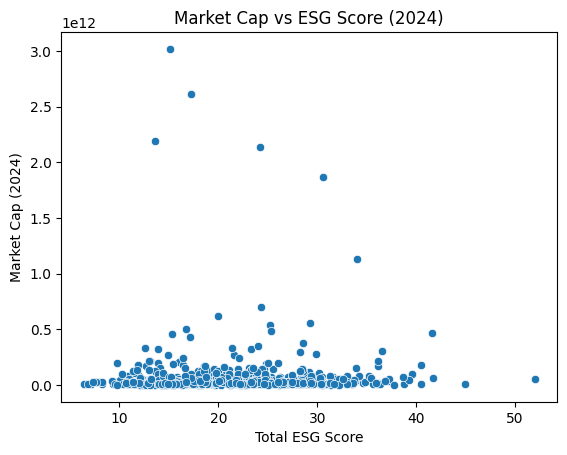
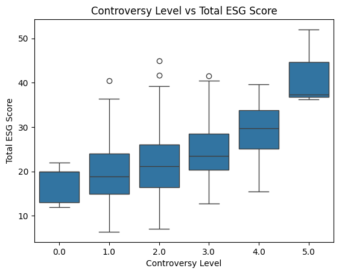
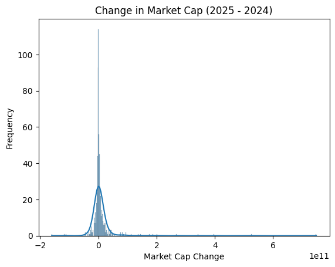
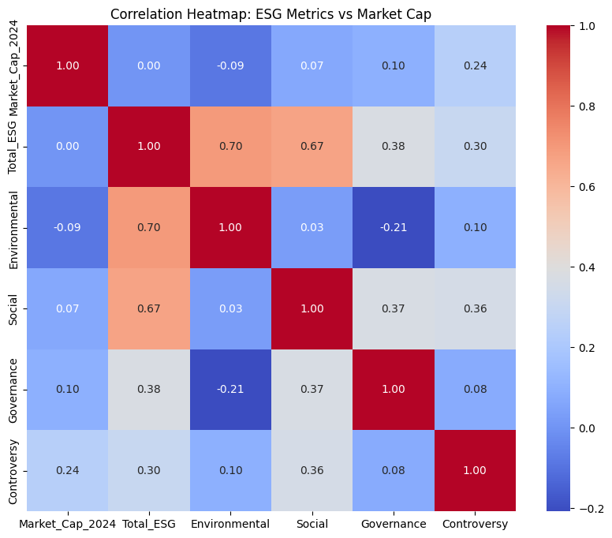

import pandas as pd
import seaborn as sns
import matplotlib.pyplot as plt
url_2024 = "https://bcdanl.github.io/data/esg_proj_2024_data.csv"
esg_proj_2024_data = pd.read_csv(url_2024)
url_2025 = "https://bcdanl.github.io/data/esg_proj_2025.csv"
esg_proj_2025 = pd.read_csv(url_2025)
esg_merged = esg_2024.merge(esg_2025, on='Symbol', suffixes=('_2024', '_2025'))
for col in ['Market_Cap_2024', 'Market_Cap_2025', 'Total_ESG', 'Environmental', 'Social', 'Governance', 'Controversy']:
esg_merged[col] = pd.to_numeric(esg_merged[col], errors='coerce')
esg_merged['MarketCap_Change'] = esg_merged['Market_Cap_2025'] - esg_merged['Market_Cap_2024']ESG project
By Jake Nielsen
This project shows relationship between a company’s ESG (Environmental, Social, and Governance) risk and its financial performance using data sets. We will analyze datasets of companies that included ESG risk scores, controversy levels, and market cap values for 2024 and 2025. The data was merged together and visualized with the help of pandas, matplotlib, and Seaborn. Through descriptive statistics, distributions, and grouping comparisons, we will see how ESG factors are impacted by company size and market trends. The goal of this project is to find out whether ESG risk is associated with different financial outcomes and to try and find patterns that may lead us to other conclusions.
esg_merged| Year_2024 | Symbol | Name_2024 | Sector_2024 | Industry_2024 | Country_2024 | Market_Cap_2024 | IPO_Year_2024 | Total_ESG | Environmental | ... | Governance | Controversy | Year_2025 | Name_2025 | Sector_2025 | Industry_2025 | Country_2025 | Market_Cap_2025 | IPO_Year_2025 | MarketCap_Change | |
|---|---|---|---|---|---|---|---|---|---|---|---|---|---|---|---|---|---|---|---|---|---|
| 0 | 2024 | A | Agilent Technologies Inc. Common Stock | Industrials | Biotechnology: Laboratory Analytical Instruments | United States | 40365434818 | 1999.0 | 13.6 | 1.1 | ... | 6.1 | 2.0 | 2025 | Agilent Technologies Inc. Common Stock | Industrials | Biotechnology: Laboratory Analytical Instruments | United States | 3.391867e+10 | 1999.0 | -6.446765e+09 |
| 1 | 2024 | A | Agilent Technologies Inc. Common Stock | Industrials | Biotechnology: Laboratory Analytical Instruments | United States | 40365434818 | 1999.0 | 13.6 | 1.1 | ... | 6.1 | 2.0 | 2025 | Agilent Technologies Inc. Common Stock | Industrials | Biotechnology: Laboratory Analytical Instruments | United States | 3.391867e+10 | 1999.0 | -6.446765e+09 |
| 2 | 2024 | AA | Alcoa Corporation Common Stock | Industrials | Aluminum | United States | 6622135551 | 2016.0 | 24.0 | 13.8 | ... | 4.3 | 3.0 | 2025 | Alcoa Corporation Common Stock | Industrials | Aluminum | United States | 8.279121e+09 | 2016.0 | 1.656986e+09 |
| 3 | 2024 | AA | Alcoa Corporation Common Stock | Industrials | Aluminum | United States | 6622135551 | 2016.0 | 24.0 | 13.8 | ... | 4.3 | 3.0 | 2025 | Alcoa Corporation Common Stock | Industrials | Aluminum | United States | 8.279121e+09 | 2016.0 | 1.656986e+09 |
| 4 | 2024 | AAL | American Airlines Group Inc. Common Stock | Consumer Discretionary | Air Freight/Delivery Services | United States | 9088024606 | NaN | 26.4 | 9.9 | ... | 4.8 | 2.0 | 2025 | American Airlines Group Inc. Common Stock | Consumer Discretionary | Air Freight/Delivery Services | United States | 7.325392e+09 | NaN | -1.762633e+09 |
| ... | ... | ... | ... | ... | ... | ... | ... | ... | ... | ... | ... | ... | ... | ... | ... | ... | ... | ... | ... | ... | ... |
| 622 | 2024 | XYL | Xylem Inc. Common Stock New | Industrials | Fluid Controls | United States | 32010402681 | 2011.0 | 18.1 | 4.3 | ... | 5.2 | 1.0 | 2025 | Xylem Inc. Common Stock New | Industrials | Fluid Controls | United States | 2.965650e+10 | 2011.0 | -2.353902e+09 |
| 623 | 2024 | YUM | Yum! Brands Inc. | Consumer Discretionary | Restaurants | United States | 39885044416 | NaN | 20.1 | 4.5 | ... | 4.1 | 2.0 | 2025 | Yum! Brands Inc. | Consumer Discretionary | Restaurants | United States | 4.400042e+10 | NaN | 4.115376e+09 |
| 624 | 2024 | Z | Zillow Group Inc. Class C Capital Stock | Consumer Discretionary | Business Services | United States | 10195469129 | NaN | 22.2 | 1.2 | ... | 9.5 | 2.0 | 2025 | Zillow Group Inc. Class C Capital Stock | Consumer Discretionary | Business Services | United States | 1.706396e+10 | NaN | 6.868492e+09 |
| 625 | 2024 | ZBH | Zimmer Biomet Holdings Inc. Common Stock | Health Care | Industrial Specialties | United States | 24476778026 | NaN | 26.0 | 3.6 | ... | 7.9 | 2.0 | 2025 | Zimmer Biomet Holdings Inc. Common Stock | Health Care | Industrial Specialties | United States | 2.232493e+10 | NaN | -2.151844e+09 |
| 626 | 2024 | ZTS | Zoetis Inc. Class A Common Stock | Health Care | Biotechnology: Pharmaceutical Preparations | United States | 72535308358 | 2013.0 | 18.8 | 3.2 | ... | 8.7 | 2.0 | 2025 | Zoetis Inc. Class A Common Stock | Health Care | Biotechnology: Pharmaceutical Preparations | United States | 7.389462e+10 | 2013.0 | 1.359314e+09 |
627 rows × 21 columns
Above is the merged data set.
sns.histplot(esg_merged['Total_ESG'], kde=True)
plt.title('Distribution of Total ESG Scores')
plt.xlabel('Total ESG Score')
plt.ylabel('Frequency')
plt.show()
The histogram above shows how the Total ESG Risk Scores are distributed across all of the companies in the dataset. The line shows a good fit for the data. The large majority of these companies have ESG scores are in the middle of the distribution, with fewer of the companies exhibiting low or high ESG risks. This shows that most companies have moderate ESG and only a few exhibit high or poor ESG practices.
plt.figure(figsize=(12, 6))
sns.boxplot(x='Sector_2024', y='Total_ESG', data=esg_merged)
plt.xticks(rotation=90)
plt.title('Total ESG Scores by Sector')
plt.show()
This boxplot shows how the Total ESG Risk varies across different sectors. The blue boxes represent the interquartile range with the line inside the box indicating the median. The unshaded circles show outliers. The blue box also shows the variation among these companies in the same industry. Some sectors have very low ESG risk scores, indicating stronger sustainability performance. Sectors like Energy for example, show higher ESG scores meaning greater exposure to ESG-related risks.
sns.scatterplot(x='Total_ESG', y='Market_Cap_2024', data=esg_merged)
plt.title("Market Cap vs ESG Score (2024)")
plt.xlabel("Total ESG Score")
plt.ylabel("Market Cap (2024)")
plt.show()
This scatterplot shows the relationship between a company’s ESG score and its market capitalization. There is definitely not a strong correlation between market cap and ESG score. Both high and low market cap companies have either high or low ESG scores.
sns.boxplot(x='Controversy', y='Total_ESG', data=esg_merged)
plt.title("Controversy Level vs Total ESG Score")
plt.xlabel("Controversy Level")
plt.ylabel("Total ESG Score")
plt.show()
The boxplot shows the relationship between a company’s controversy level and its total ESG score. Higher controversy levels are clearly associated with much higher ESG risk scores. This proves the idea that reputation is an important component of ESG evaluation.
sns.histplot(esg_merged['MarketCap_Change'], kde=True)
plt.title("Change in Market Cap (2025 - 2024)")
plt.xlabel("Market Cap Change")
plt.ylabel("Frequency")
plt.show()
This frequency distribution shows how the market capitalization changed from 2024 to 2025. The distribution is centered at around 0, a lot of companies show very small changes. There are some companies with a very large increases or decreases in market cap, this is likely due to financial or ESG performance.
corr = esg_merged[['Market_Cap_2024', 'Total_ESG', 'Environmental', 'Social', 'Governance', 'Controversy']].corr()
plt.figure(figsize=(10, 8))
sns.heatmap(corr, annot=True, cmap='coolwarm', fmt=".2f")
plt.title("Correlation Heatmap: ESG Metrics vs Market Cap")
plt.show()
Total ESG Score is positively correlated with Environmental and Social . There is a weak correlation between ESG scores and Market Cap values, both in 2024 and 2025. We can see that company size does not really predict ESG performance too well.
Controversy has a positive correlation with Total ESG Score, meaning that companies involved with more controversies should have higher overall ESG risk. Market Cap Change also is not strongly correlated with ESG metrics, which could mean that ESG risk by itself probably does not drive short-term market valuation shifts.